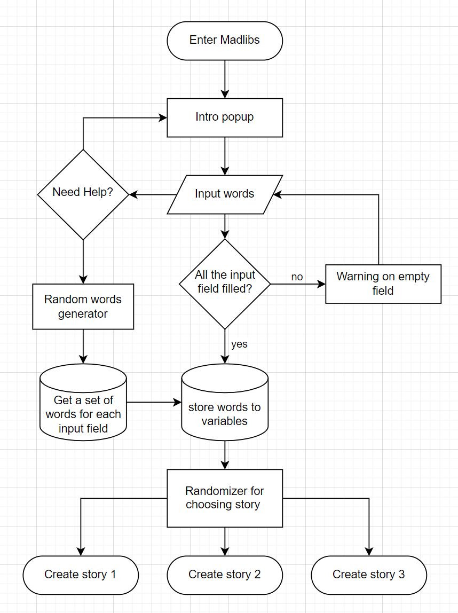

Madlibs 2.0 Visual and UX/UI Enhancement
1. Funtionality Improvement
In the next phase of development for the Madlibs web project, I'm introducing an array of functional enhancements to enrich the user journey. The "Random" button will be activated to select words from a predefined array in JavaScript, providing users with an instant, effortless means of filling out the story inputs. This feature promises to infuse each session with novelty and amusement.
Additionally, I'm designing an introductory pop-up that will greet users upon their arrival, setting the tone for their creative adventure. This welcome message will be accessible at any time via a new button, ensuring that users can revisit the instructions whenever they choose.
Furthermore, I'm crafting three diverse storylines that will be dynamically generated, offering a tapestry of narratives that promise to keep the Madlibs experience varied and engaging. These functional upgrades are geared towards creating a more interactive and user-friendly interface that consistently delights and inspires our storytellers.
2. Visual Enhancement
In revamping the visual design of the Madlibs web project, my aim is to create a harmonious and engaging interface that enhances user focus and pleasure.
I plan to modify the background by reducing the contrast of the current zig-zag pattern, thereby diminishing visual distractions and allowing the content to take center stage. The container boxes will be redesigned for uniform spacing, fostering a clean and organized layout that simplifies navigation.
Interaction animations will be refined to be smoother. Buttons will illuminate upon hover to intuitively indicate interactivity. Additionally, the button section will be redesigned with increased spacing to prevent user error and to provide a more comfortable experience. The "Create Story" button will receive a size increase, making it more prominent and accessible, thereby inviting users to begin their storytelling journey with a single, unmistakable call to action.
These visual enhancements are crafted to not only improve aesthetics but also to streamline the user's journey from start to finish.